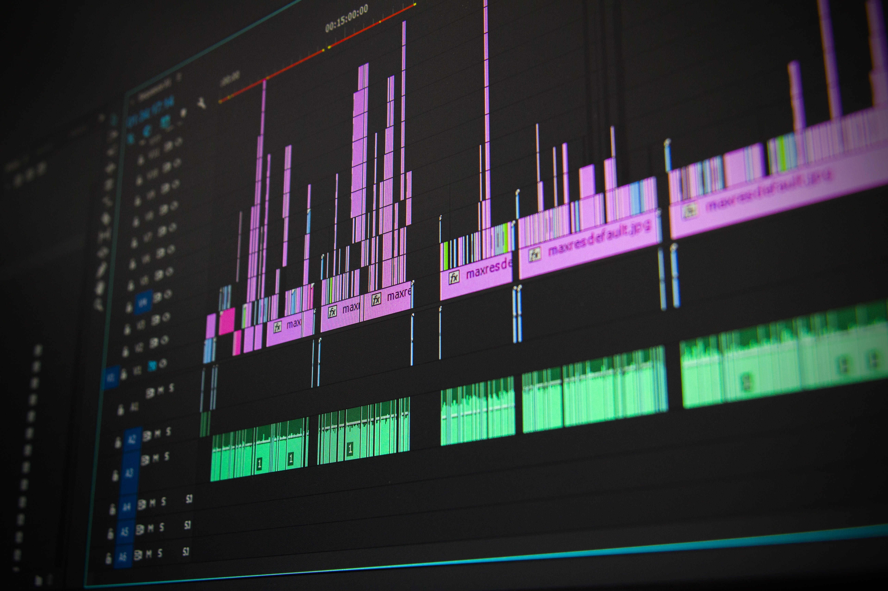

Bienvenue sur mon Portfolio
Vous retrouverez ici toutes les informations concernant mes études et mon parcours professionnel.
Cliquez ici pour continuer
Vous retrouverez ici toutes les informations concernant mes études et mon parcours professionnel.
Cliquez ici pour continuerCitation de Lebron James
Souhaitant me lancer dans la voie technologique depuis le collège, ce fut la voie qui m'était naturellement destinée/me correspondait le plus.
* : SIN étant la spécialité du BAC, l'acronyme correpondent à Système d'Information et Numérique.
Dans la continuité de mon BAC et souhaitant faire des études courtes, ce BTS était la suite logique.
*SIO SISR étant le BTS ainsi que la spécialité choisie pour ce dernier, les acronymes correspondent à Services Informatiques aux Organisations option Solutions d'Infrastructure, Systèmes et Réseaux.

À l'obtention de mon BTS SIO, je souhaiterais poursuivre une dernière année d'étude pour obtenir une Licence dans le domaine de la Cybersécurité.
Le CNAM sécurité défense propose une licence pro Cyberdefense : Analyste en sécurité des systèmes télécoms, réseaux et informatiques (ASSTRI)